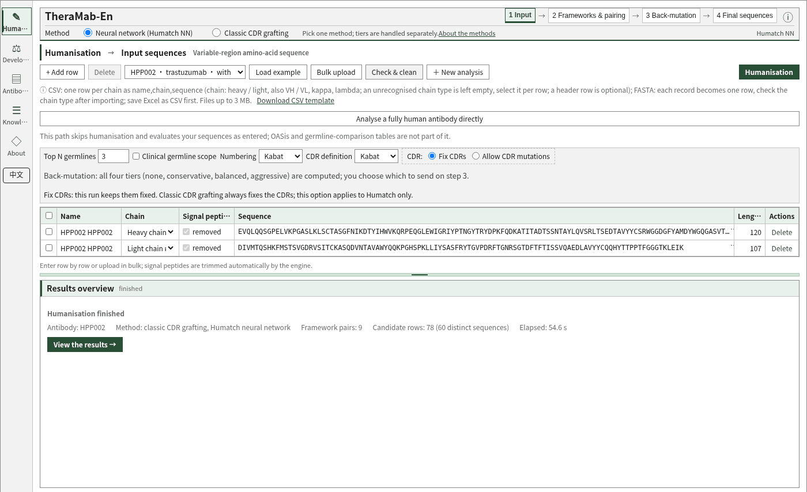
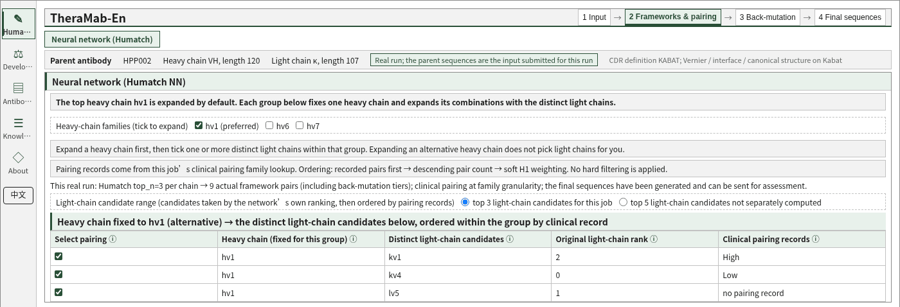
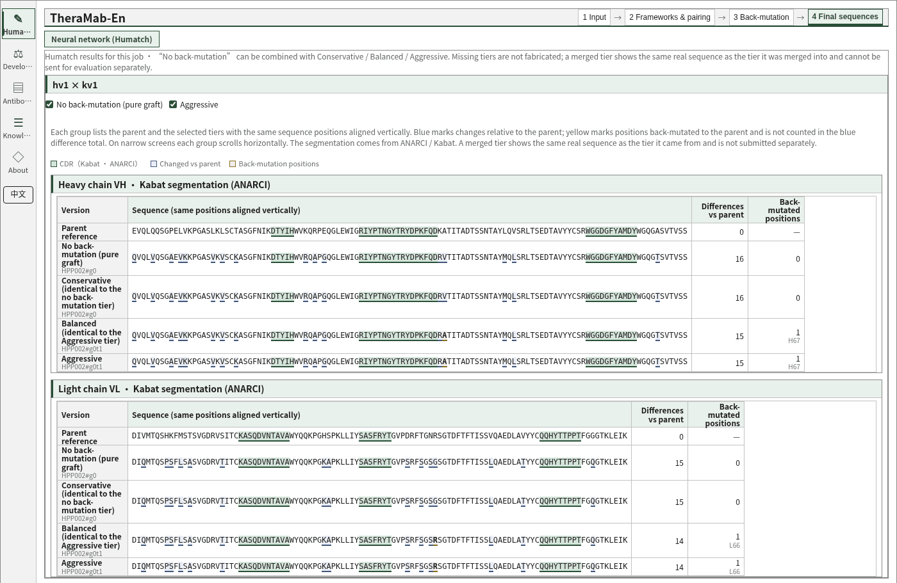
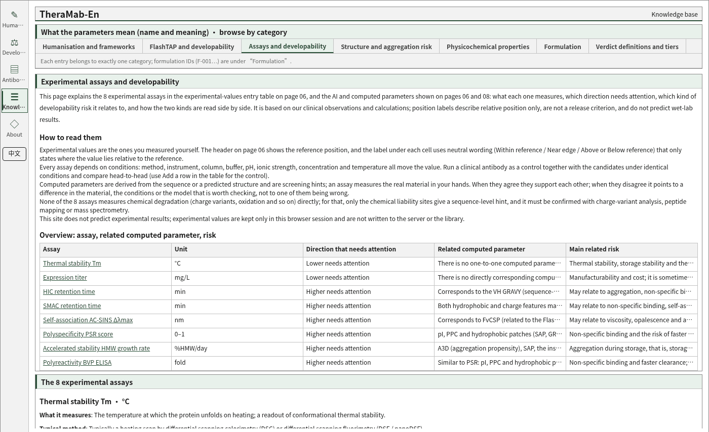
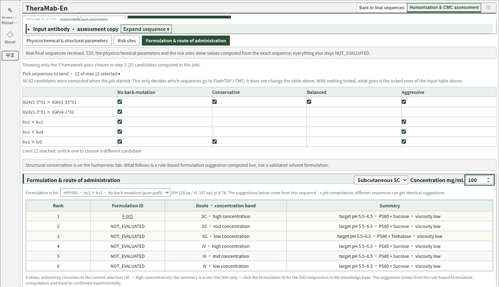

01Overview
TheraMab brings together, on one platform, the three things needed to take an antibody from a non-human sequence to a developable candidate: humanization design, developability assessment, and CMC formulation optimization and advice. From one pair of heavy and light chains, a client obtains several humanization options, the risk positions of each option, actionable optimized sequences, and formulation advice for both subcutaneous and intravenous administration.
Highlights
- One continuous workflow, no tool-switching: humanization, assessment, optimization, and formulation advice are done in one place, and optimized sequences can go straight back into the assessment table to be re-evaluated.
- Privacy and information security as a premise: each client's sequences and results belong only to their own account, and neither pages nor interfaces expose internal details of the algorithms or databases.
- Results with a sense of position: each parameter is shown against a reference range, with a position label rather than as an isolated number. These are position labels, not a pass/fail judgement from wet-lab work, and not a release criterion.
Antibodies that are already fully human or humanized (including sequences designed by other software) can also go directly into developability assessment. This product is for scientific research and early R&D reference only; it does not constitute a basis for clinical decisions, diagnosis, treatment, or regulatory submission.
02Product demo video
A demonstration of the TheraMab web edition (about 4 min 46 s), which plays on this page. The demo uses public example antibodies and was recorded in a separate test environment; it contains no client data.
▲ Product demo video (web-edition walkthrough, about 4 min 46 s).
03Background and challenges
In early antibody R&D, sequence design and developability judgement are usually split across several tools and several people. It is hard to connect the information, and three problems recur.
- Humanization and developability are disconnected: humanization options are made in one tool and developability is assessed in another; changing a sequence means exporting and importing again, and the trade-offs of back-mutations and their effect on developability are not visible on the same chart.
- Risk is only numbers, with no sense of position: a single physicochemical parameter lacks a reference, so the team cannot tell whether a value is high or low, or in which direction to optimize.
- Formulation and sequence are considered separately: formulation is only thought about after the sequence is fixed, by which point viscosity or aggregation problems are already late; there is no direct link between risk sites and the corresponding formulation levers.
04Product overview
TheraMab integrates these three modules into a single continuous workflow, with a built-in knowledge base and private sequence library.
Scroll horizontally to view full table
| Module | What it solves | Key outputs |
|---|---|---|
| Humanization design | Dual routes (CDR grafting and neural network) with four back-mutation levels. | Humanized VH/VL pairings, alignment to parent, OASis humanness. |
| Developability assessment | Puts physicochemical, structural, FlashTAP, SAP, and A3D parameters in a reference range. | Position map, radar chart, parameter table, CDR/FR risk-site list. |
| Risk-site optimization | Separates CDR binding positions from FR engineerable positions; one-click sequence generation. | Substitutions, exported FASTA, and whole-Ab / CDR / FR re-assessment. |
| CMC formulation advice | Links sequence risk sites to actionable formulation levers for SC and IV routes. | Tiered SC/IV formulations, formulation numbers, similar marketed molecules. |
| Private library & report | Manages candidates by target, clone, and variant under strict per-account isolation. | Side-by-side CMC comparison and printable comprehensive report. |
05Workflow
From input sequence to formulation advice, the client works through one connected flow, and the result of each step carries into the next.
- Input: paste or upload heavy and light chains (CSV, FASTA, Excel; templates and format notes are provided). Non-human antibodies go through humanization; sequences that are already fully human or humanized can go directly to developability assessment.

▲ Fig. 1: Sequence input page (the demo has loaded the heavy and light chains of the public example antibody). - Humanization: the system offers several framework pairings, each with different back-mutation levels (none, conservative, balanced, aggressive). The client selects the pairings of interest, and later assessment is shown only for the selected pairings.

▲ Fig. 2: Framework and pairing — candidate light chains and the number of pairing records. - Assessment: humanness, physicochemical developability, FlashTAP, and a CMC summary. Each parameter is shown within a reference range on a position map and radar chart, with axis notes and result analysis.
- Optimization: risk sites are split into CDR and FR tables. FR sites carry substitution suggestions; once ticked, an optimized sequence is generated in one click, can be exported, and can be added back into the assessment table.
- Re-assessment: an optimized sequence added back to the assessment table is re-evaluated automatically, with results for whole-antibody, CDR-only, and FR-only views, so the client can see directly whether the optimization improved key parameters (steps 4 to 5 can be repeated).
- Formulation advice: tiered subcutaneous and intravenous formulation advice, formulation numbers, and marketed molecules physicochemically similar to the client's sequence; the formulation lever for each risk site links to a specific formulation entry in the knowledge base.
- Library and report: candidate sequences can enter the client's own account library, and a comprehensive report including the formulation advice and its rationale is generated.

▲ Fig. 3: The antibody library is organized by target, clone, and variant, and CMC parameters can be compared side by side.
Analysis state is saved per job in the client's own browser, so after viewing the knowledge base or switching pages the client can return to the previous results; "New analysis" clears everything in one click to start over, without affecting sequences already in the library.
06Core capabilities
Humanization
For a non-human antibody, two routes are offered at once: classic CDR grafting, and a neural-network (NN) design that keeps more of the parental framework. Both routes have four back-mutation levels (none, conservative, balanced, aggressive) under the same back-mutation rules. The difference is the starting point: CDR grafting transplants the whole germline framework and so has more back-mutation positions to consider, while NN keeps most of the parental framework and has fewer. The client selects the framework pairings of interest at step 3, and later assessment is shown only for the selected pairings.

Developability assessment
- Physicochemical and structural parameters: instability index, hydrophobicity (GRAVY), chemical risk sites, pI, Fv net charge, the viscosity indicator FvCSP, spatial aggregation propensity (SAP), and aggregation propensity (A3D).

▲ Fig. 5: Physicochemical and structural parameter table, one row per candidate. - FlashTAP: a fast, TAP-like risk indicator.
- TAP developability: metric bars show raw TAP values and where they sit against the reference (normal) range, with Pass or Caution verdicts; a radar chart compares candidates on the same axes, and the light-green band marks the common range. These are position labels, not a pass/fail judgement from wet-lab work, and not a release criterion.

▲ Fig. 6: TAP developability — metric bars and radar chart (the light-green band is the common range). - Experimental-value entry table: clients enter their own measured values (Tm, expression, HIC, SMAC, AC-SINS, PSR, accelerated-stability slope, BVP, etc.); the system marks the position against thresholds and reminds the user to run a same-condition head-to-head comparison with a clinical antibody.
- Knowledge base: an "Assays and developability" page explains the meaning, risk direction, relationship to developability, and limitations of each experimental and computed parameter.

▲ Fig. 7: Knowledge base, "Assays and developability" page.
Risk-site optimization
CDR and FR risk sites are presented separately. CDR sites involve binding, so only formulation and process hints are given; FR sites carry specific substitution suggestions and alternatives, staying conservative at positions such as conserved tryptophans. Once the client ticks a selection, an optimized sequence is generated in one click, can be exported as FASTA, and can be added back into the assessment table to be re-evaluated, using the whole-antibody, CDR-only, and FR-only views to see whether it improved.

CMC formulation optimization and advice
- Tiered advice: for the subcutaneous and intravenous administration routes, each with high, medium, and low concentration tiers, giving pH, buffer system, excipients, and viscosity risk.

▲ Fig. 9: Submission choices and formulation advice (subcutaneous and intravenous; high, medium, low concentration tiers). - Formulation numbers and comparison: a formulation number is given, along with marketed molecules physicochemically similar to the client's sequence as references.
- Levers linked to formulations: each risk site corresponds to a formulation lever (for example, an oxidation site corresponds to practices that suppress oxidation), linked to specific formulation entries in the knowledge base (a few references at most).
- Report: a "Formulation advice and reasons" page lists composition, pH, excipients, viscosity notes, and lever rationale, marked as rule-based hints that need experimental validation.

▲ Fig. 10: Comprehensive report, "Formulation advice and reasons" (rule-based hints; require experimental validation).
Formulation-related output is advice based on rules and surrogate indicators; it is not a viscosity-prediction model and not an experimentally validated conclusion.
07Privacy and information security
Privacy and information security are a premise of the product. The table below lists the measures already implemented in the web edition; each has been independently reviewed and validated.
Scroll horizontally to view full table
| Aspect | Measure |
|---|---|
| Data isolation | Each client's sequence library and jobs are kept under their own account and invisible to other accounts; accessing another account's job and accessing a non-existent job return exactly the same result; trial example sequences are shared read-only. |
| Access control | Login authentication, with accounts opened by our invitation; account identity is passed in and verified by the access layer, and identity headers forged by the client are discarded; without a valid identity, write operations are refused outright. |
| Algorithm and database confidentiality | Pages and interfaces do not show source names, database names, sample sizes, or literature citations; external output drops internal fields and uses neutral codes for internal references; page scripts are minified and stripped of comments; public interfaces are rate-limited. |
| Network security | HTTPS site-wide, with HSTS, security headers, hidden server version, rate limiting, and request-body size limits; direct backend ports are closed to the outside. |
| Client-side state | Analysis state and drafts are stored only in the client's own browser and not uploaded to the server; "New analysis" clears them in one click. |
| Backup and recovery | Daily consistent backups of the sequence library and account information, weekly recovery tests, health checks, and alerting. |
| Audit and change control | Every release is independently reviewed first, verified in an isolated environment by a second reviewer, and retains a ready rollback path. |
Note on data handling: the platform stores the sequences, calculation results, and library entries a client submits. They are visible only to the client's own account; operations staff access them only for maintenance and for deletion at the client's request. Data are kept until the client requests deletion, and remain in backups for at most about two months after deletion.
08Inputs, outputs, and how to use
Scroll horizontally to view full table
| Stage | What is supported |
|---|---|
| Sequence input | Heavy and light chains (single pair or batch CSV / FASTA / Excel; templates and format notes provided); non-human antibodies go through humanization, while fully human or already humanized sequences go straight to developability assessment. |
| Humanization route | Dual routes (CDR grafting and NN) × 4 back-mutation levels; selectable pairing results. |
| Assessment result | Position map, radar chart, parameter table, risk-site table, FlashTAP, and CMC summary. |
| Optimization result | Substitution suggestions and optimized sequences (exportable as FASTA, able to re-enter assessment). |
| Formulation result | Tiered subcutaneous and intravenous formulation advice, formulation numbers, and similar marketed molecules. |
| Export | Sequences (FASTA), score tables (CSV), and a comprehensive report (including a printable "Formulation advice and reasons" page). |
| Sequence library | Candidate sequences can enter the client's own account library, organized by target, clone, and variant; duplicate sequences are flagged as "already exists" and existing records are not overwritten. |
| Language | Chinese and English interfaces. |
Sequences that are already fully human or humanized by other software go directly into assessment, with output of physicochemical parameters, FlashTAP, SAP and A3D, risk sites with regions, and formulation advice.
09Scope and limitations
This is a reference tool for scientific research and early R&D. The following boundaries should be understood in advance:
- Position labels are not experimental results: "pass, caution, exceeds, falls short" indicate where a candidate sits within a reference range, not the success or failure of wet-lab work, and not a release condition. Thresholds change with experimental conditions, so a same-condition comparison with a clinical antibody is recommended.
- Formulation is rule-based advice: it is based on rules and surrogate indicators, not a viscosity-prediction model, and needs experimental validation.
- Humanness comparison for external sequences has gaps: for sequences that are already fully human or designed by other software, there is no OASis humanness score; when no parental sequence is provided, comparisons to the parent (loops, H3, Vernier, interface, back-mutations) are shown as not assessed.
- Re-assessed sequences: optimized sequences added back into the assessment table currently skip OASis humanness, and formulation numbers, similar marketed molecules, and further substitution suggestions are not yet generated for them.
- Scope of modalities: for conventional VH/VL IgG antibodies; formats such as nanobodies, bispecifics, and ADCs are not included in this product.
- Security boundary: data are isolated per account, and pages/APIs do not expose internal algorithm or database details.
This product is for scientific research and early R&D reference only; it does not constitute a basis for clinical decisions, diagnosis, treatment, or regulatory submission. Before any candidate enters development, it needs independent judgement by qualified personnel together with experiments and regulatory requirements.
10Roadmap and statement
Upcoming enhancements: on page 1, an "already fully human, go directly to developability analysis" option and a "New analysis" button; format notes and a CSV template for batch upload, with automatic assessment after import; formulation numbers, similar marketed molecules, and substitution suggestions for optimized sequences; restoring analysis state from any return path; and a dedicated data-and-privacy page.
Planned, scheduled as demand dictates:
- Connect OASis humanness scoring to the assessment of external sequences.
- Save formulation and lever rationale for newly added library sequences, so the comprehensive report is more complete for them.
- A feasibility study of high-concentration viscosity-prediction models (licensing, validation, compute).
- An off-site backup copy.
Statement: this whitepaper describes the product as it is designed today and the capabilities already validated. The content is for scientific research and early R&D reference only; it does not constitute a basis for clinical decisions, diagnosis, treatment, or regulatory submission, and does not guarantee a candidate's performance in experiments. Versions and features are as actually delivered.
11Trial and contact
To trial TheraMab, or to request materials beyond this whitepaper, please email us to request an invitation code. We open the web-edition trial by account invitation. For highly sensitive sequences, a locally run desktop edition is available on request.
Disclaimer
This page and accompanying whitepaper reflect the currently published design and scope of TheraMab. Binding, expression, stability, viscosity, and function require experimental verification. Not for clinical, diagnostic, therapeutic, or regulatory use.